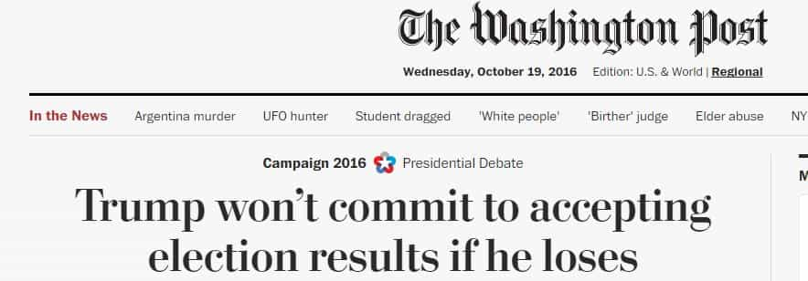

< < < Back
The Final Presidential Debate Showcased The True Corruption Of Hillary Clinton – Return Of Kings
The final Presidential debate for 2016, held at the University of Nevada, Las Vegas last night, yielded few surprises. For a start, both candidates, Donald J. Trump and Hillary Clinton, dislike each other just as much as, if not more than before. They did not shake hands either at the beginning or end of the debate. On most issues, too, they have very non-complementary or outright opposing views.
What the third debate represented, really, is a distillation of both candidates’ stances as revealed throughout the campaign. Aside from Trump’s stinging assault on the orchestrated Democratic Party violence to disrupt one of his rallies (injuring police officers) and discussion of other new Wikileaks revelations, the to-ing and fro-ing was reminiscent of the first two debates in New York and St. Louis. Hillary Clinton clung to the tired old line that the Republican nominee is a Russian stooge and Donald Trump recommitted himself to draining the swamp of corruption and self-interest in Washington D.C.
Here are some of the key themes from yesterday evening’s proceedings:
Hillary is still trying to cover her receipt of “dark, unaccountable money” with ridiculous platitudes
At the beginning of the debate, in response to a question about the Supreme Court, Hillary Clinton waxed lyrical (again) about her supposed desire to rid American politics of “dark, unaccountable money.” But with the Clinton Foundation having its meetings at places like Goldman Sachs’ headquarters and Clinton underlings explicitly talking about the need to make billionaire George Soros “happy,” action on this front is sorely missing from her campaign. Even this week, it was revealed that Goldman Sachs’ chief spin doctor, Richard L. “Jake” Siewert, had defended the Clinton Foundation in 2015. Politico used a quote from him, which was then strangely presented as an anonymous source. Consequently, and we are just scraping the surface, the “dark, unaccountable money” vibe is coming solely and squarely from the Clinton campaign.
Every major US corporation that has taken a side during the Presidential race so far has taken Hillary Clinton’s. Interest groups ranging from hedge fund operators to journalists have also overwhelmingly supported Clinton in financial terms. Whilst in some respects this was a point that Trump could have hammered home better, the all-round stink of the Clinton campaign when it comes to the support of elites cannot be disputed. Between now and election day, this is something both Trump himself and his supporters need to emphasize continually. It worked for the British people and Brexit, and it can work for the American people and Trump.
Trump owned Hillary on the Second Amendment
Hillary’s pretend guns position.
Well, let me just tell you before we go any further, in Chicago, which has the toughest gun laws in the United States, probably you could say by far, they have more gun violence than any other city. So we have the toughest laws and you have tremendous gun violence.
— Donald Trump
Hillary Clinton was in the frankly unenviable position of “defending” the Second Amendment and simultaneously calling for the kind of gun restrictions unheard of in most of America. After she clumsily tried to explain that her 18-year stint in Arkansas and time as New York Senator make her an ardent supporter of the right to bear arms, Trump floored her with the truth about Chicago. Some of the most restrictive anti-firearms legislation in the country has utterly failed to save America’s third-largest city from the terror of unprecedented gun violence. Washington D.C. is another case in point, a capital city so unsafe that virtually half of it is a no-go zone for those interested in their own personal safety.
Again, Trump could have made the retort more biting, reminding Clinton that this was her hometown and a political stronghold of Democrats over many decades. Still, the implications of his remarks became clear immediately: Clinton looked visibly annoyed and cornered. Trump’s willingness to focus on the systemic and historical failures of Democrats in inner-city areas in particular is one that needs to be replicated by his most well-known supporters, including Chris Christie and Rudy Giuliani, between now and election day. So much of what Clinton is calling for, and not just on gun control, has already been beta-tested in major American cities with abysmal results.
Interestingly, Clinton brought up the NRA as if it were some shadowy, malevolent organization, when, in fact, it is much more transparent in its dealings and endorsements than the corporations and other interest groups, usually just fronts for billionaires and multinationals, supporting Hillary.
Hillary is aiming to give citizenship to millions of illegal immigrants (future Democratic voters)
Whether in Europe or the US, letting in so many people and allowing them to stay is in service of the same outcome – liberal voting majorities.
Debate moderator Chris Wallace from Fox News indicated in his immigration question to the candidates that Hillary Clinton had “offered no specific plan” for securing the US southern border. Following Trump’s reiteration of the necessity of making the border an actual border, not a free-for-all transit zone, Clinton waffled repeatedly. She talked about poor “Carla,” whose parents are illegals and might be deported under Trump (yes, she was born in the United States, so she benefited from the preposterously read constitutional interpretation of birthright citizenship). These human interest diversions are simply a vehicle for liberals to avoid actually addressing the messes they have created.
The only thing Clinton seemingly promised to do was to remove the most criminally-minded aliens. Considering that the Democrats cannot remove most criminals from the streets of Chicago, which they have otherwise controlled for forever and a day, one should seriously doubt any Clinton Administration’s ability to root out undocumented felons from south of the border. What we can definitely say is that an elected Hillary Clinton will follow through with President Obama’s attempts at using executive orders to stop deportations of illegal immigrants.
Media outlets, embarrassed by Wikileaks revelations of pro-Clinton collusion, are pathetically rounding on Trump to cover their asses

Post-debate, the mainstream media blew out of all proportion comments by Donald Trump that he would decide later whether to respect any November 8 election outcome. And why shouldn’t he wait? To put it bluntly, Trump would be a fool to promise that he will honor the “result” in November. Wikileaks revelations about rigged Democratic primaries, recent videos from Project Veritas about the DNC’s engineering of widespread violence and voter fraud [1] [2], and extensive proof of journalists outright colluding with the Clinton campaign are all emblematic of a political and media establishment breaking countless laws and moral rules to keep Trump from the White House.
As the powers that be rage to stop The Donald, we have 19 days left to help get him into the Oval Office.
Read More: Donald Trump Indisputably Destroys Hillary Clinton In The Second Presidential Debate